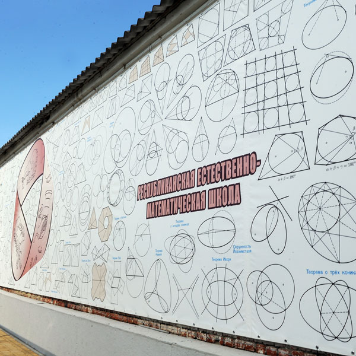

10 / Геометрия
Стена геометрии
Готово
Что это за экспонат
Стена геометрии — это стена в Математическом парке, на которой нарисован целый набор чертежей. Каждый чертёж — это картинка без подробных пояснений, и за каждой из них спрятано одно геометрическое утверждение, то есть теорема.
Задача посетителя — рассмотреть картинку, понять, что именно она утверждает, и попробовать это доказать. Рисунки взяты из книги А. В. Акопяна «Геометрия в картинках». Это сборник теорем классической геометрии, которые записаны не словами и формулами, а чертежами.
Математическая идея
Главная мысль экспоната: геометрическое утверждение можно увидеть. В Древней Индии доказательством нередко считали один рисунок с единственной подписью «Смотри». Хороший чертёж действительно может сразу показать, почему утверждение верно: нужно заметить равные отрезки или углы, одинаковые по площади части, подобные фигуры.
Но чертёж только подсказывает. Настоящее доказательство появляется, когда мы можем объяснить словами, почему на картинке всё именно так. Поэтому на стене важны два шага: сначала угадать, что утверждается, а затем доказать это.
Попробуйте сами
- Выберите на стене любой чертёж и найдите на нём фигуры: треугольники, окружности, четырёхугольники.
- Отметьте, что на чертеже особенное: равные отрезки, равные углы, точки, которые лежат на одной прямой.
- Сформулируйте утверждение одним предложением: «Если..., то...».
- Попробуйте объяснить, почему оно верно. Если не получается, нарисуйте такой же чертёж в тетради и поменяйте в нём что-нибудь, например форму треугольника. Продолжает ли утверждение работать?
Для разминки подумайте над простым примером: как с помощью одной дополнительной прямой, параллельной стороне треугольника, увидеть, что сумма его углов равна 180°? Этот пример взят для тренировки, он необязательно изображён на стене.
Страница оригинала
«Стена геометрии» на museum.adygmath.ru ↗
Факты сверены со страницей оригинала и статьёй о Математическом парке на сайте ТАСС. Рисунки на стене взяты из книги А. В. Акопяна «Геометрия в картинках».
Это учебная страница собственной копии сайта.